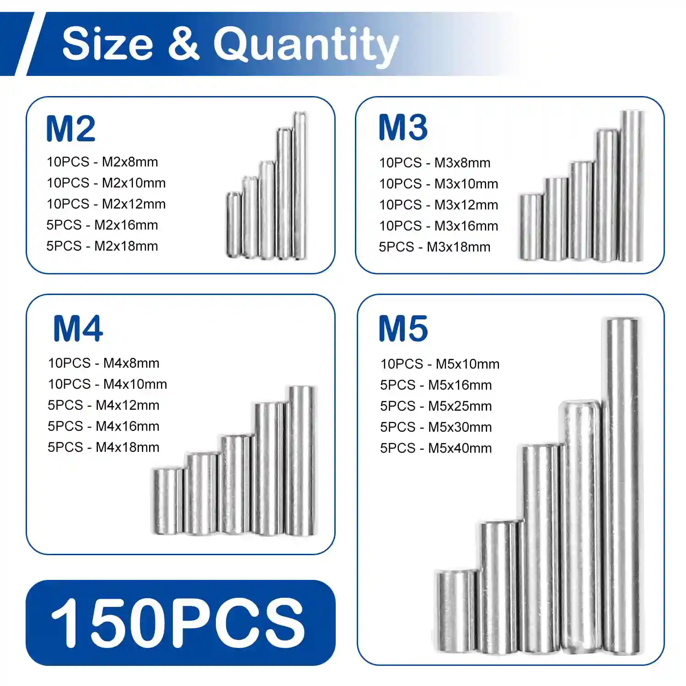
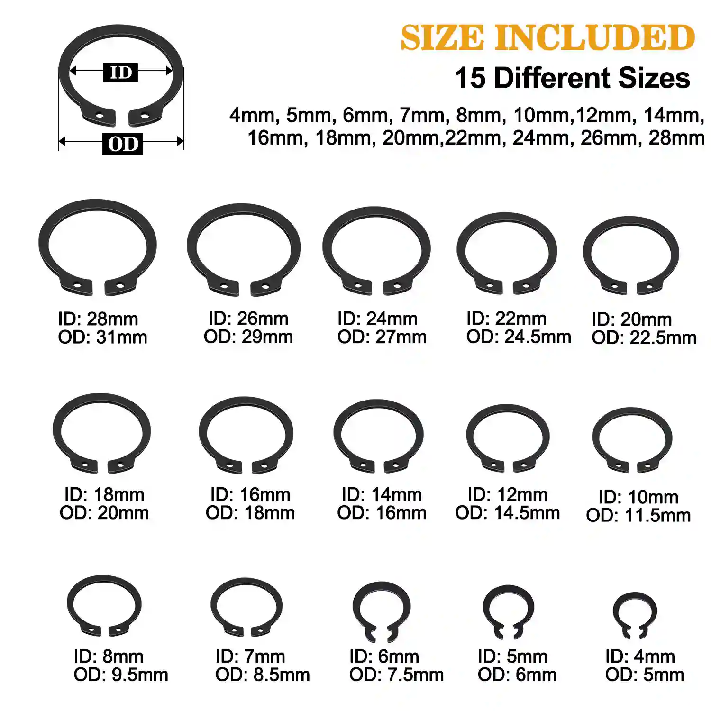

Berita & Pembaruan
Wawasan industri, pengumuman perusahaan, dan berita terbaru dari WT Fasteners.
Wawasan industri, pengumuman perusahaan, dan berita terbaru dari WT Fasteners.

test summary
Baca Selengkapnya ->
Pada 9 November 2007, Komisi Eropa meluncurkan investigasi anti-dumping terhadap produk fastener besi dan baja dari China. Kasus ini melibatkan lebih dari 1.700 perusahaan China dengan nilai ekspor se
Baca Selengkapnya ->
Tinggalkan kosong untuk menggunakan kutipan
Baca Selengkapnya ->
April 2026 jadi bulan puncak perdagangan fastener di Tiongkok Selatan dengan rangkaian Guangzhou Sourcing Fair & Yiwu Hardware Expo. Manfaatkan koridor dual-core untuk ekspor dan perluasan pasar g
Baca Selengkapnya ->WT Fasteners adalah produsen dan eksportir terkemuka baut berkualitas tinggi, sekrup, washer, dan fastener khusus. Melayani pasar global dengan produk bersertifikat ISO sejak 2005.
Baca Selengkapnya ->